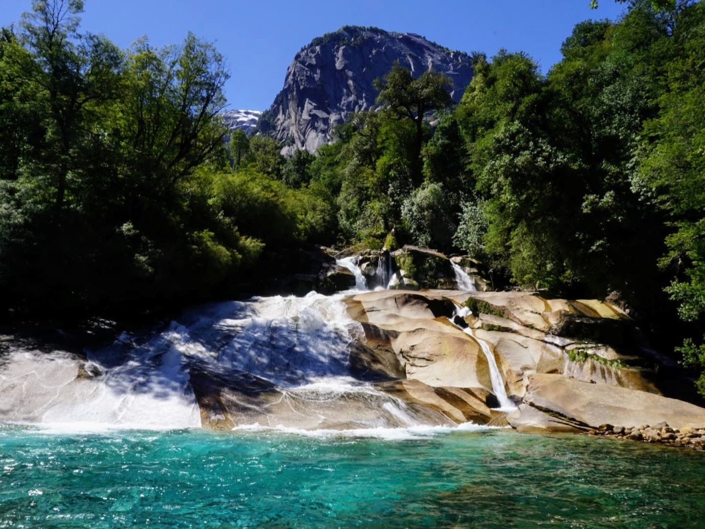
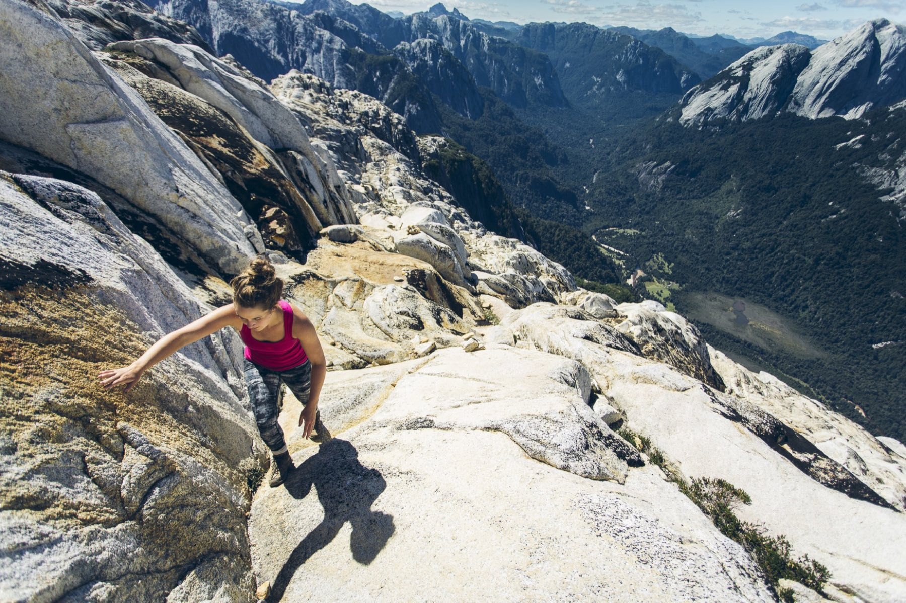
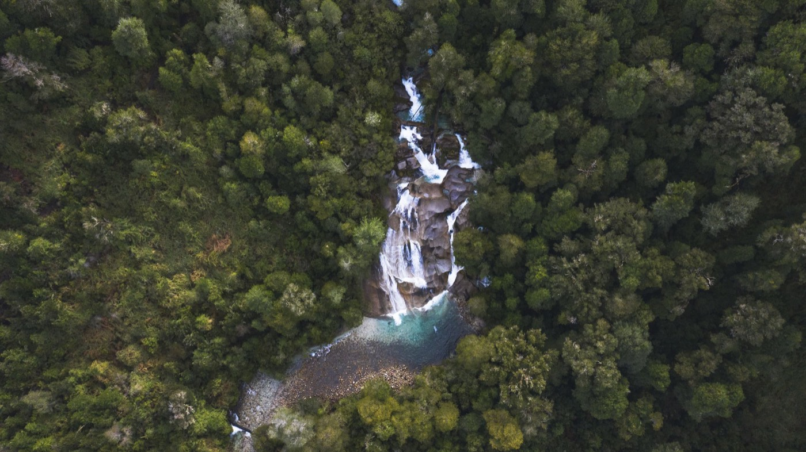
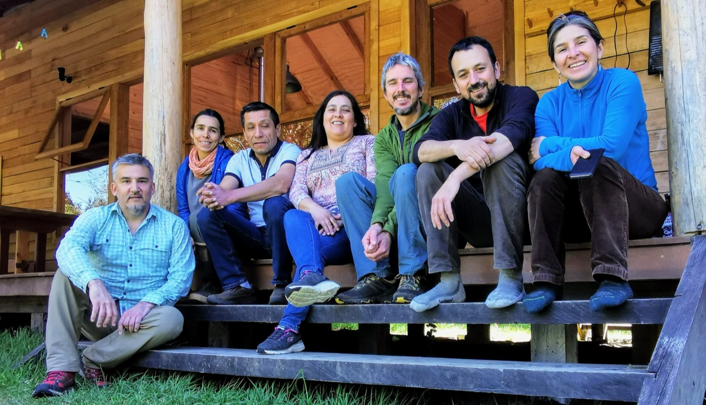
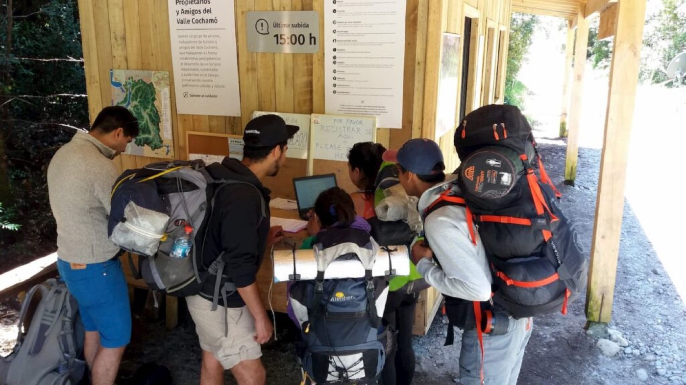
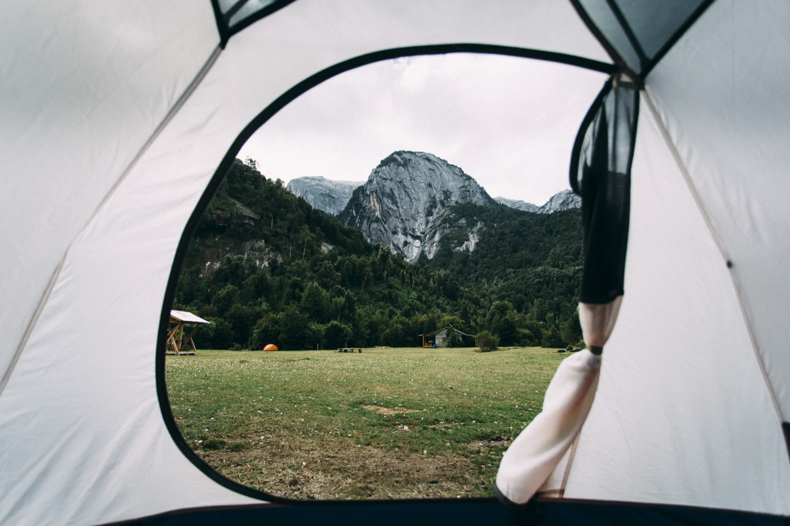
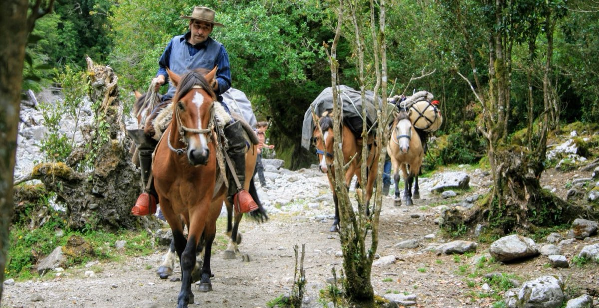
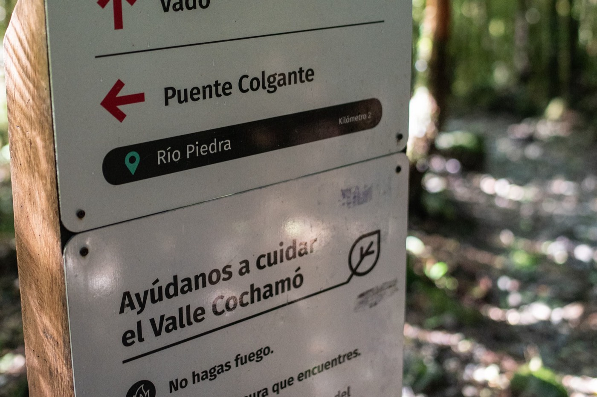
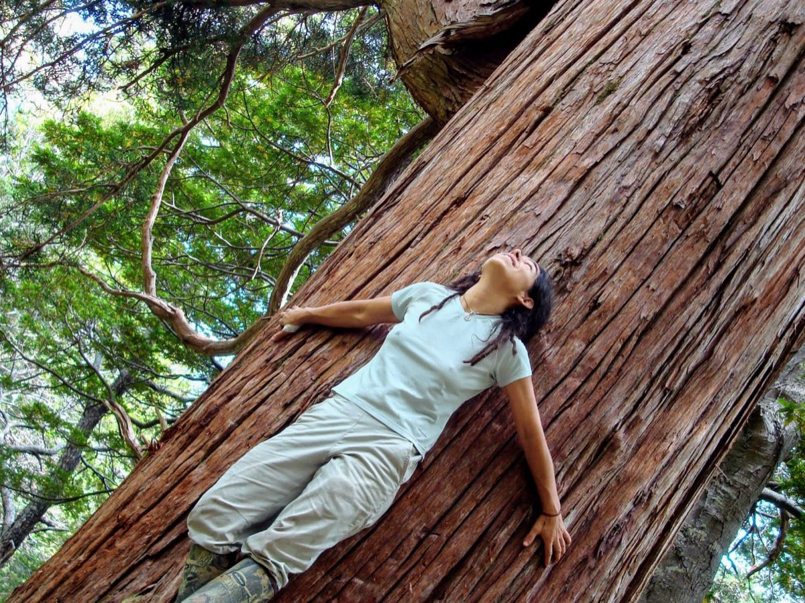

Voy a visitarPlanifica y reserva tu viaje
Elige tu sector, revisa horarios y distancias, conoce las normas y asegura tu lugar antes de llegar.

El Valle Cochamó no es un parque ni una reserva pública: son tierras privadas que sus dueños abrieron al público. Lo cuidamos entre todos, con una visita ordenada y un compromiso real con su conservación.
Sector La Junta · Comuna de Cochamó, Región de Los Lagos
Desde 2016 se reserva para entrar · Desde 2017 nos organizamos
0,8 ha
Superficie propuesta como Santuario de la Naturaleza
0 ha
De bosque de alerce, con ejemplares de cerca de 1.000 años
+0
Visitantes al año recorren el sendero de los arrieros
0 m
De paredes de granito del Batolito Norpatagónico
Un solo lugar
Reunimos aquí lo que antes estaba repartido: el sistema de reservas y la preparación del viaje, junto al trabajo de conservación que hace posible que el valle siga abierto.

Voy a visitarElige tu sector, revisa horarios y distancias, conoce las normas y asegura tu lugar antes de llegar.

Quiero ayudarEl valle aún no está protegido oficialmente. Hazte socio, postula como voluntario o dona para sostener el trabajo.
Nuestra historia
La historia de la conservación del Valle Cochamó se remonta a décadas de esfuerzos dispersos. Lo que empezó como la resistencia a un proyecto hidroeléctrico terminó convirtiéndose en una organización comunitaria que hoy ordena la visita, repara senderos y empuja la creación de un área protegida.
“Las decisiones de hoy determinan las consecuencias de mañana.” Lema del sistema de reservas del Valle Cochamó
2009 — 2012
Un grupo ciudadano se organiza para enfrentar un proyecto hidroeléctrico que pretendía explotar el río Cochamó y sus principales afluentes.
Primer gobierno de Bachelet
Junto a la comunidad local se consigue un decreto presidencial que crea una reserva para la cuenca del río Cochamó, orientada a la conservación y al desarrollo local.
2016
Comienza a funcionar el sistema de reservas: una forma concreta de respetar la capacidad de carga del sendero y de los campings, y de reducir el impacto sobre el valle.
2017
Personas de Conservación Cochamó, miembros de Puelo Patagonia, propietarios, operadores turísticos y aliados internacionales —entre ellos Friends of Cochamó— dan vida a la OVC.
2019
Vecinos, arrieros, propietarios y operadores consolidan una gobernanza común para el destino.
Julio 2022
La propuesta de 11.432,8 hectáreas llega al Ministerio de Bienes Nacionales, sobre terrenos fiscales —la Hijuela 5— y predios privados que se sumaron de forma voluntaria.
Octubre 2022
Conversatorio comunitario en Lago Vidal y Torrentoso, y participación en el 2.º Encuentro de Áreas Protegidas en Santiago.
Hoy
Las amenazas no cesaron: proyectos inmobiliarios, centrales y, sobre todo, un camino que avanza cada vez más cerca. Seguimos trabajando para que el santuario sea declarado.
Quiénes somos
Somos una organización comunitaria y transversal, sin fines de lucro, que trabaja por el turismo responsable y el ordenamiento territorial del Valle Cochamó.
El valle es un conjunto de tierras mayoritariamente privadas, unidas por un sendero que los arrieros andinos han usado durante generaciones. Hoy ese mismo sendero lo comparten más de 17.000 visitantes al año. Por eso operadores turísticos, propietarios y amantes del valle empezamos a trabajar en un área protegida colaborativa: un modelo donde quienes viven y trabajan aquí siguen siendo quienes lo administran.
Nos mueve el cariño por este lugar y la preocupación por los efectos ambientales del aumento de visitantes. Resguardamos los estilos de vida tradicionales, la cultura y la identidad local, y buscamos que el patrimonio natural y cultural del valle llegue entero a las próximas generaciones.

Visita
Todos se reservan antes de llegar. Infórmate, programa y prepárate: el sendero es largo, hay mucho barro y el tiempo es impredecible.

AccesoLa entrada al valle comienza donde el río Cochamó se junta con el mar. Desde el puente tienes la primera vista del Cerro Arcoíris y del bosque nativo.

Centro del valleEl centro turístico del valle, accesible solo a pie o a caballo. Aquí están los campings, el hospedaje y, cerca, los Toboganes.

AlternativaIdentidad cultural propia, ligada a la cultura gaucha campesina de la Patagonia chilena y argentina. Una excelente alternativa al muy visitado Valle Cochamó.
Antes de ir
No hay rescatistas ni servicios de emergencia en el valle. Lo que lleves y lo que sepas es toda la seguridad con la que cuentas.
No es un paseo fácil: es larga y difícil. Si no vas a dormir arriba, calcula bien tus tiempos.
Su nombre viene de su aspecto de tobogán natural y atrae a la gente a deslizarse por ellos. Son extremadamente peligrosos: la mayoría de los accidentes graves del valle ocurren allí.
La mayoría de los trekkings hacia los valles de altura son muy demandantes y peligrosos. Anda siempre en grupo, con linterna, abrigo, comida y agua.
¿Necesitas caballos para subir tus cosas o quieres llegar a La Junta cabalgando? Contacta directamente a la agrupación de arrieros de Cochamó.
Ver contactoEl ingreso tiene horarios definidos y se respetan sin excepción. Revísalos antes de viajar y considera el tiempo de traslado hasta el inicio del sendero.
Ver horariosEl valle está en la comuna de Cochamó, Región de Los Lagos. El sendero comienza donde el río Cochamó desemboca en el estuario de Reloncaví.
Ver la rutaNormas básicas

¿Por qué reservar?
Desde 2016, para visitar el sector La Junta hay que reservar. No es un trámite: es el mecanismo que permite respetar la capacidad de carga del sendero y de los campings. Cuando se llenan —algo habitual en temporada alta— hay que esperar para entrar.
Las reservas se gestionan en una plataforma común de operadores turísticos, propietarios y amigos del valle. El valle no es un parque ni una reserva pública: son terrenos privados cuyos dueños abrieron el acceso.
Cómo se reparte tu donación
Inicio Sendero, La Junta o Lago Vidal. En La Junta eliges entre los campings Playa Los Manzanos, Vista Hermosa y La Junta.
Recibirás el comprobante que deberás mostrar al llegar. Si el cupo está completo, tendrás que esperar.
Presenta tu reserva en el registro y respeta el horario de ingreso que te corresponde.
Acampa solo donde está habilitado y baja toda tu basura. El valle depende de eso.

Conservación
El valle no está protegido oficialmente por el Estado chileno. En julio de 2022 presentamos al Ministerio de Bienes Nacionales la propuesta de declararlo Santuario de la Naturaleza, sobre terrenos fiscales —la Hijuela 5— y predios privados que se sumaron voluntariamente.
Un santuario reconoce los valores ambientales del territorio y es conciliador con la cultura y las formas de vida locales: la comunidad sigue siendo quien lo administra.
Las amenazas no cesaron
Llaman al valle “el Yosemite de Sudamérica”. La pregunta es si queremos que se parezca a Yosemite o que siga siendo Cochamó.
Es la amenaza más urgente. Lo impulsan los mismos desarrolladores que deforestaron en el vecino Valle El Manso. Un camino terminaría con la tradición viva de los arrieros y traería contaminación y riesgo de incendios.
Empresarios con afanes inmobiliarios y proyectos de centrales hidroeléctricas siguen apuntando al Cochamó y al Puelo, afectando a las comunidades rurales y a la biodiversidad.
El crecimiento acelerado trajo problemas de residuos, impacto sobre flora y fauna, más accidentes, contaminación de las aguas y peligro de incendios. Necesita planificación de largo plazo.
Nuestros desafíos
Cinco metas concretas que necesitan financiamiento. Cada una mejora directamente la experiencia de quienes visitan y reduce el impacto sobre el valle.
Nació como respuesta al aumento exponencial del turismo. Es el punto donde se informa, se registra y se educa a quien entra al valle.
11,5 km de sendero con señalética que explica el bosque, el río y la historia arriera a lo largo del recorrido.
Reparación de tramos erosionados e infraestructura para encauzar el tránsito y evitar que el barro siga ensanchando la huella.
Formación de un equipo con insumos de primeros auxilios. Hoy el valle no cuenta con servicios de emergencia.
Material audiovisual para que cada visitante llegue sabiendo qué esperar, qué llevar y cómo comportarse.
Estos proyectos se financian con donaciones y con el aporte de socios y socias.
AportarLo que hemos logrado
Colaborar
La mayor parte del valle son tierras privadas cuyos dueños permiten el acceso público. Mantener los senderos, los ecosistemas y la cultura local cuesta trabajo y dinero.
Un aporte periódico que da continuidad al trabajo: lo que permite planificar más allá de la próxima temporada.
Quiero ser socioEl 50% activa programas de conservación de largo plazo y el 50% financia la infraestructura que permite visitar el valle minimizando el impacto.
Donar ahoraJornadas de trabajo en senderos, señalética, reciclaje y educación ambiental, junto a la comunidad local.
PostularNoticias del santuario, avances de los proyectos y avisos de temporada. Sin spam, pocas veces al año.
Colaboradores